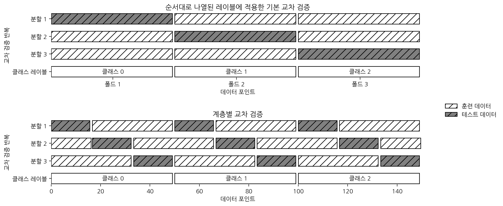
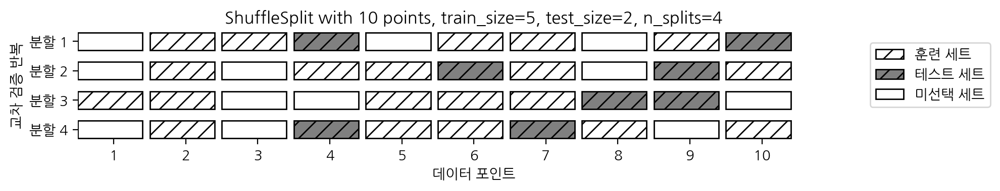
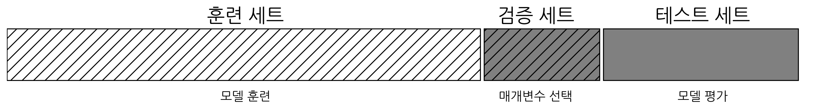
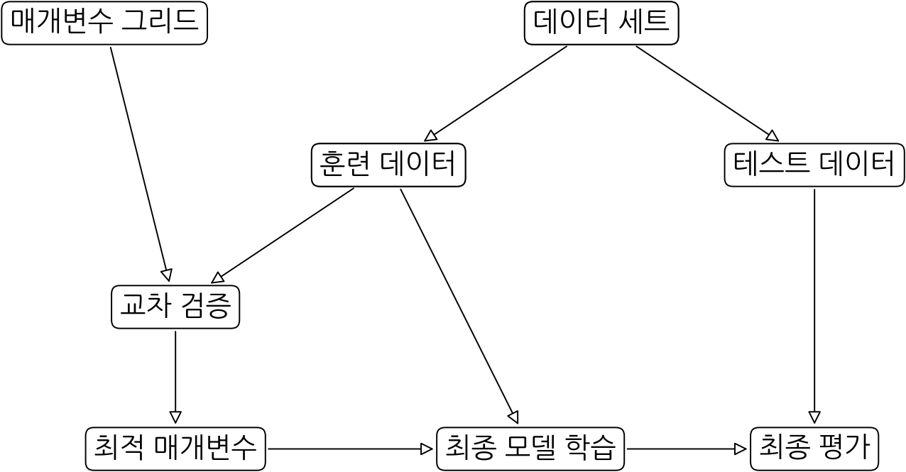
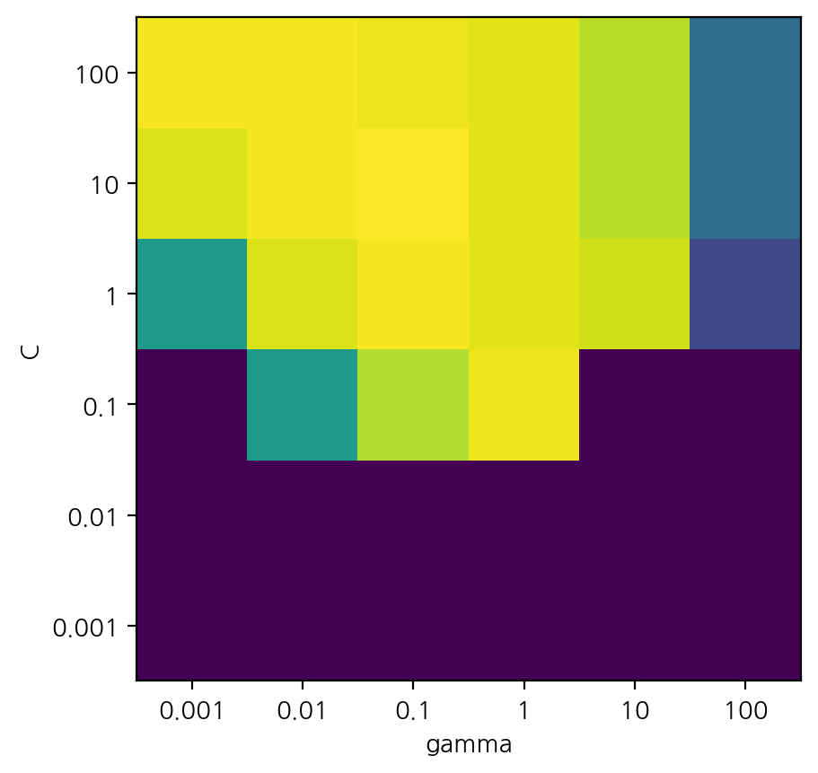
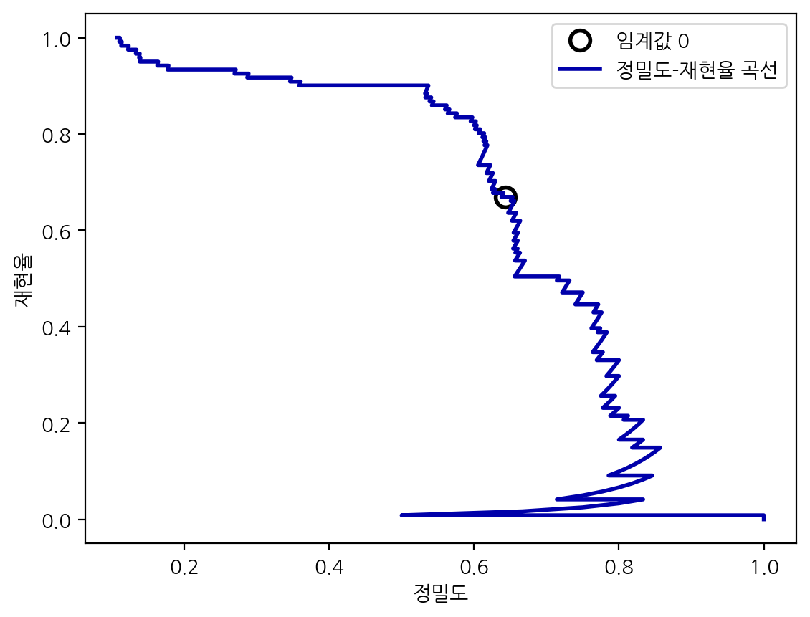
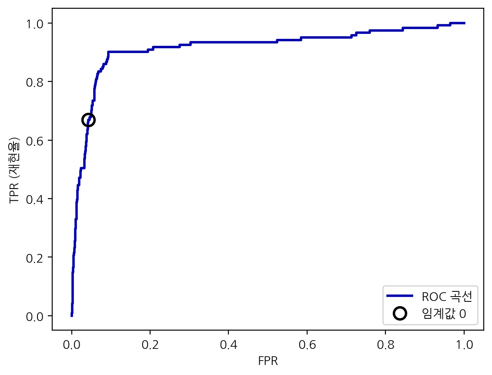
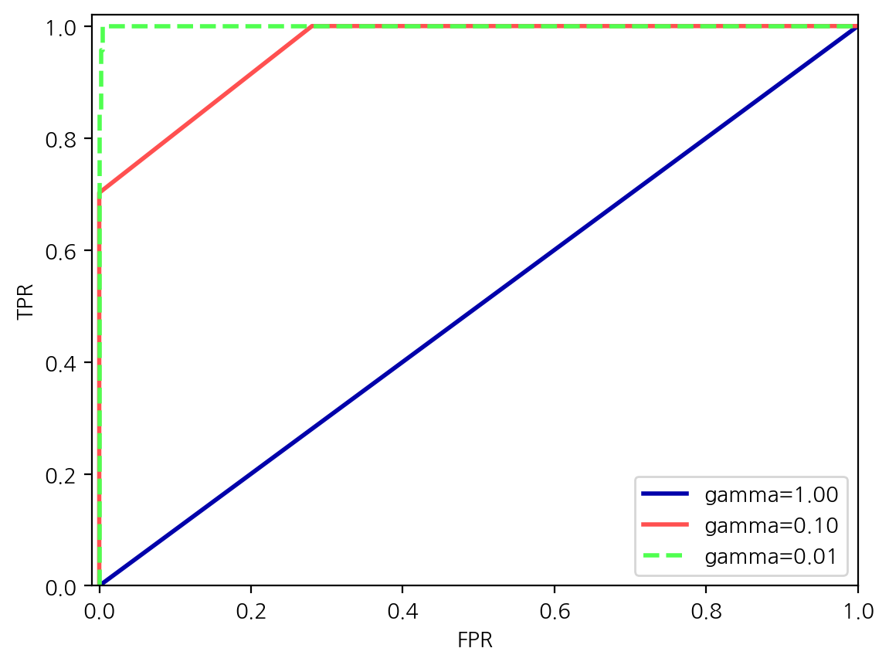

from preamble import *
import koreanize_matplotlib모델 평가와 성능 향상
모델 평가와 성능 향상
from sklearn.datasets import make_blobs
from sklearn.linear_model import LogisticRegression
from sklearn.model_selection import train_test_split
# 인위적인 데이터셋을 만듭니다
X, y = make_blobs(random_state=0)
# 데이터와 타깃 레이블을 훈련 세트와 테스트 세트로 나눕니다
X_train, X_test, y_train, y_test = train_test_split(X, y, random_state=0)
# 모델 객체를 만들고 훈련 세트로 학습시킵니다
logreg = LogisticRegression().fit(X_train, y_train)
# 모델을 테스트 세트로 평가합니다
print("테스트 세트 점수: {:.2f}".format(logreg.score(X_test, y_test)))테스트 세트 점수: 0.88교차 검증(Cross Validation)
mglearn.plots.plot_cross_validation()
scikit-learn의 교차 검증
from sklearn.model_selection import cross_val_score
from sklearn.datasets import load_iris
from sklearn.linear_model import LogisticRegression
iris = load_iris()
logreg = LogisticRegression(max_iter=1000)
scores = cross_val_score(logreg, iris.data, iris.target)
print("교차 검증 점수:", scores)교차 검증 점수: [0.967 1. 0.933 0.967 1. ]scores = cross_val_score(logreg, iris.data, iris.target, cv=10)
print("교차 검증 점수:", scores)교차 검증 점수: [1. 0.933 1. 1. 0.933 0.933 0.933 1. 1. 1. ]print("교차 검증 평균 점수: {:.2f}".format(scores.mean()))교차 검증 평균 점수: 0.97from sklearn.model_selection import cross_validate
res = cross_validate(logreg, iris.data, iris.target,
return_train_score=True)
display(res){'fit_time': array([0.004, 0.007, 0.004, 0.004, 0.004]),
'score_time': array([0. , 0.001, 0.001, 0. , 0. ]),
'test_score': array([0.967, 1. , 0.933, 0.967, 1. ]),
'train_score': array([0.967, 0.967, 0.983, 0.983, 0.975])}res_df = pd.DataFrame(res)
display(res_df)
print("평균 시간과 점수:\n", res_df.mean())| fit_time | score_time | test_score | train_score | |
|---|---|---|---|---|
| 0 | 4.00e-03 | 0.00e+00 | 0.97 | 0.97 |
| 1 | 7.06e-03 | 1.00e-03 | 1.00 | 0.97 |
| 2 | 4.00e-03 | 1.00e-03 | 0.93 | 0.98 |
| 3 | 4.12e-03 | 0.00e+00 | 0.97 | 0.98 |
| 4 | 4.00e-03 | 0.00e+00 | 1.00 | 0.97 |
평균 시간과 점수:
fit_time 4.64e-03
score_time 4.00e-04
test_score 9.73e-01
train_score 9.75e-01
dtype: float64교차 검증의 장점
계층별(Stratified) k-겹 교차 검증과 그외 전략들
from sklearn.datasets import load_iris
iris = load_iris()
print("Iris 레이블:\n", iris.target)Iris 레이블:
[0 0 0 0 0 0 0 0 0 0 0 0 0 0 0 0 0 0 0 0 0 0 0 0 0 0 0 0 0 0 0 0 0 0 0 0 0
0 0 0 0 0 0 0 0 0 0 0 0 0 1 1 1 1 1 1 1 1 1 1 1 1 1 1 1 1 1 1 1 1 1 1 1 1
1 1 1 1 1 1 1 1 1 1 1 1 1 1 1 1 1 1 1 1 1 1 1 1 1 1 2 2 2 2 2 2 2 2 2 2 2
2 2 2 2 2 2 2 2 2 2 2 2 2 2 2 2 2 2 2 2 2 2 2 2 2 2 2 2 2 2 2 2 2 2 2 2 2
2 2]mglearn.plots.plot_stratified_cross_validation()
교차 검증 상세 옵션
from sklearn.model_selection import KFold
kfold = KFold(n_splits=5)print("교차 검증 점수:\n", cross_val_score(logreg, iris.data, iris.target, cv=kfold))교차 검증 점수:
[1. 1. 0.867 0.933 0.833]kfold = KFold(n_splits=3)
print("교차 검증 점수:\n", cross_val_score(logreg, iris.data, iris.target, cv=kfold))교차 검증 점수:
[0. 0. 0.]kfold = KFold(n_splits=3, shuffle=True, random_state=0)
print("교차 검증 점수:\n", cross_val_score(logreg, iris.data, iris.target, cv=kfold))교차 검증 점수:
[0.98 0.96 0.96]LOOCV(Leave-One-Out cross-validation)
from sklearn.model_selection import LeaveOneOut
loo = LeaveOneOut()
scores = cross_val_score(logreg, iris.data, iris.target, cv=loo)
print("교차 검증 분할 횟수: ", len(scores))
print("평균 정확도: {:.2f}".format(scores.mean()))교차 검증 분할 횟수: 150
평균 정확도: 0.97임의 분할 교차 검증
mglearn.plots.plot_shuffle_split()
from sklearn.model_selection import ShuffleSplit
shuffle_split = ShuffleSplit(test_size=.5, train_size=.5, n_splits=10)
scores = cross_val_score(logreg, iris.data, iris.target, cv=shuffle_split)
print("교차 검증 점수:\n", scores)교차 검증 점수:
[0.947 0.96 0.987 0.947 0.947 0.933 0.987 0.973 0.973 0.96 ]그룹별 교차 검증
from sklearn.model_selection import GroupKFold
# 인위적 데이터셋 생성
X, y = make_blobs(n_samples=12, random_state=0)
# 처음 세 개의 샘플은 같은 그룹에 속하고
# 다음은 네 개의 샘플이 같습니다.
groups = [0, 0, 0, 1, 1, 1, 1, 2, 2, 3, 3, 3]
scores = cross_val_score(logreg, X, y, groups=groups, cv=GroupKFold(n_splits=3))
print("교차 검증 점수:\n", scores)교차 검증 점수:
[0.75 0.6 0.667]mglearn.plots.plot_group_kfold()그리드 서치(Grid Search)
간단한 그리드 서치
# 간단한 그리드 서치 구현
from sklearn.svm import SVC
X_train, X_test, y_train, y_test = train_test_split(iris.data, iris.target,
random_state=0)
print("훈련 세트의 크기: {} 테스트 세트의 크기: {}".format(
X_train.shape[0], X_test.shape[0]))
best_score = 0
for gamma in [0.001, 0.01, 0.1, 1, 10, 100]:
for C in [0.001, 0.01, 0.1, 1, 10, 100]:
# 매개변수의 각 조합에 대해 SVC를 훈련시킵니다
svm = SVC(gamma=gamma, C=C)
svm.fit(X_train, y_train)
# 테스트 세트로 SVC를 평가합니다
score = svm.score(X_test, y_test)
# 점수가 더 높으면 매개변수와 함께 기록합니다
if score > best_score:
best_score = score
best_parameters = {'C': C, 'gamma': gamma}
print("최고 점수: {:.2f}".format(best_score))
print("최적 파라미터:", best_parameters)훈련 세트의 크기: 112 테스트 세트의 크기: 38
최고 점수: 0.97
최적 파라미터: {'C': 100, 'gamma': 0.001}매개변수 과대적합과 검증 세트
mglearn.plots.plot_threefold_split()
from sklearn.svm import SVC
# 데이터를 훈련+검증 세트 그리고 테스트 세트로 분할
X_trainval, X_test, y_trainval, y_test = train_test_split(
iris.data, iris.target, random_state=0)
# 훈련+검증 세트를 훈련 세트와 검증 세트로 분할
X_train, X_valid, y_train, y_valid = train_test_split(
X_trainval, y_trainval, random_state=1)
print("훈련 세트의 크기: {} 검증 세트의 크기: {} 테스트 세트의 크기:"
" {}\n".format(X_train.shape[0], X_valid.shape[0], X_test.shape[0]))
best_score = 0
for gamma in [0.001, 0.01, 0.1, 1, 10, 100]:
for C in [0.001, 0.01, 0.1, 1, 10, 100]:
# 매개변수의 각 조합에 대해 SVC를 훈련시킵니다
svm = SVC(gamma=gamma, C=C)
svm.fit(X_train, y_train)
# 검증 세트로 SVC를 평가합니다
score = svm.score(X_valid, y_valid)
# 점수가 더 높으면 매개변수와 함께 기록합니다
if score > best_score:
best_score = score
best_parameters = {'C': C, 'gamma': gamma}
# 훈련 세트와 검증 세트를 합쳐 모델을 다시 만든 후
# 테스트 세트를 사용해 평가합니다
svm = SVC(**best_parameters)
svm.fit(X_trainval, y_trainval)
test_score = svm.score(X_test, y_test)
print("검증 세트에서 최고 점수: {:.2f}".format(best_score))
print("최적 파라미터: ", best_parameters)
print("최적 파라미터에서 테스트 세트 점수: {:.2f}".format(test_score))훈련 세트의 크기: 84 검증 세트의 크기: 28 테스트 세트의 크기: 38
검증 세트에서 최고 점수: 0.96
최적 파라미터: {'C': 10, 'gamma': 0.001}
최적 파라미터에서 테스트 세트 점수: 0.92교차 검증을 사용한 그리드 서치
for gamma in [0.001, 0.01, 0.1, 1, 10, 100]:
for C in [0.001, 0.01, 0.1, 1, 10, 100]:
# 매개변수의 각 조합에 대해 SVC를 훈련시킵니다
svm = SVC(gamma=gamma, C=C)
# 교차 검증을 적용합니다
scores = cross_val_score(svm, X_trainval, y_trainval, cv=5)
# 교차 검증 정확도의 평균을 계산합니다
score = np.mean(scores)
# 점수가 더 높으면 매개변수와 함께 기록합니다
if score > best_score:
best_score = score
best_parameters = {'C': C, 'gamma': gamma}
# 훈련 세트와 검증 세트를 합쳐 모델을 다시 만듭니다
svm = SVC(**best_parameters)
svm.fit(X_trainval, y_trainval)SVC(C=10, gamma=0.1)In a Jupyter environment, please rerun this cell to show the HTML representation or trust the notebook.
On GitHub, the HTML representation is unable to render, please try loading this page with nbviewer.org.
SVC(C=10, gamma=0.1)
mglearn.plots.plot_cross_val_selection()mglearn.plots.plot_grid_search_overview()
param_grid = {'C': [0.001, 0.01, 0.1, 1, 10, 100],
'gamma': [0.001, 0.01, 0.1, 1, 10, 100]}
print("매개변수 그리드:\n", param_grid)매개변수 그리드:
{'C': [0.001, 0.01, 0.1, 1, 10, 100], 'gamma': [0.001, 0.01, 0.1, 1, 10, 100]}from sklearn.model_selection import GridSearchCV
from sklearn.svm import SVC
grid_search = GridSearchCV(SVC(), param_grid, cv=5, return_train_score=True)X_train, X_test, y_train, y_test = train_test_split(iris.data, iris.target,
random_state=0)grid_search.fit(X_train, y_train)GridSearchCV(cv=5, estimator=SVC(),
param_grid={'C': [0.001, 0.01, 0.1, 1, 10, 100],
'gamma': [0.001, 0.01, 0.1, 1, 10, 100]},
return_train_score=True)In a Jupyter environment, please rerun this cell to show the HTML representation or trust the notebook. On GitHub, the HTML representation is unable to render, please try loading this page with nbviewer.org.
GridSearchCV(cv=5, estimator=SVC(),
param_grid={'C': [0.001, 0.01, 0.1, 1, 10, 100],
'gamma': [0.001, 0.01, 0.1, 1, 10, 100]},
return_train_score=True)SVC()
SVC()
print("테스트 세트 점수: {:.2f}".format(grid_search.score(X_test, y_test)))테스트 세트 점수: 0.97print("최적 매개변수:", grid_search.best_params_)
print("최고 교차 검증 점수: {:.2f}".format(grid_search.best_score_))최적 매개변수: {'C': 10, 'gamma': 0.1}
최고 교차 검증 점수: 0.97print("최고 성능 모델:\n", grid_search.best_estimator_)최고 성능 모델:
SVC(C=10, gamma=0.1)교차 검증 결과 분석
import pandas as pd
pd.set_option('display.max_columns', None)
# DataFrame으로 변환합니다
results = pd.DataFrame(grid_search.cv_results_)
# 처음 다섯 개 행을 출력합니다
display(np.transpose(results.head()))| 0 | 1 | 2 | 3 | 4 | |
|---|---|---|---|---|---|
| mean_fit_time | 0.0 | 0.0 | 0.0 | 0.0 | 0.0 |
| std_fit_time | 0.0 | 0.0 | 0.0 | 0.0 | 0.0 |
| mean_score_time | 0.0 | 0.0 | 0.0 | 0.0 | 0.0 |
| std_score_time | 0.0 | 0.0 | 0.0 | 0.0 | 0.0 |
| param_C | 0.0 | 0.0 | 0.0 | 0.0 | 0.0 |
| param_gamma | 0.0 | 0.01 | 0.1 | 1 | 10 |
| params | {'C': 0.001, 'gamma': 0.001} | {'C': 0.001, 'gamma': 0.01} | {'C': 0.001, 'gamma': 0.1} | {'C': 0.001, 'gamma': 1} | {'C': 0.001, 'gamma': 10} |
| split0_test_score | 0.35 | 0.35 | 0.35 | 0.35 | 0.35 |
| split1_test_score | 0.35 | 0.35 | 0.35 | 0.35 | 0.35 |
| split2_test_score | 0.36 | 0.36 | 0.36 | 0.36 | 0.36 |
| split3_test_score | 0.36 | 0.36 | 0.36 | 0.36 | 0.36 |
| split4_test_score | 0.41 | 0.41 | 0.41 | 0.41 | 0.41 |
| mean_test_score | 0.37 | 0.37 | 0.37 | 0.37 | 0.37 |
| std_test_score | 0.02 | 0.02 | 0.02 | 0.02 | 0.02 |
| rank_test_score | 22 | 22 | 22 | 22 | 22 |
| split0_train_score | 0.37 | 0.37 | 0.37 | 0.37 | 0.37 |
| split1_train_score | 0.37 | 0.37 | 0.37 | 0.37 | 0.37 |
| split2_train_score | 0.37 | 0.37 | 0.37 | 0.37 | 0.37 |
| split3_train_score | 0.37 | 0.37 | 0.37 | 0.37 | 0.37 |
| split4_train_score | 0.36 | 0.36 | 0.36 | 0.36 | 0.36 |
| mean_train_score | 0.37 | 0.37 | 0.37 | 0.37 | 0.37 |
| std_train_score | 0.01 | 0.01 | 0.01 | 0.01 | 0.01 |
import mglearn
scores = np.array(results.mean_test_score).reshape(6, 6)
# 교차 검증 평균 점수 히트맵 그래프
mglearn.tools.heatmap(scores, xlabel='gamma', xticklabels=param_grid['gamma'],
ylabel='C', yticklabels=param_grid['C'], cmap="viridis")
plt.show() # 책에는 없음
fig, axes = plt.subplots(1, 3, figsize=(13, 5))
param_grid_linear = {'C': np.linspace(1, 2, 6),
'gamma': np.linspace(1, 2, 6)}
param_grid_one_log = {'C': np.linspace(1, 2, 6),
'gamma': np.logspace(-3, 2, 6)}
param_grid_range = {'C': np.logspace(-3, 2, 6),
'gamma': np.logspace(-7, -2, 6)}
for param_grid, ax in zip([param_grid_linear, param_grid_one_log,
param_grid_range], axes):
grid_search = GridSearchCV(SVC(), param_grid, cv=5)
grid_search.fit(X_train, y_train)
scores = grid_search.cv_results_['mean_test_score'].reshape(6, 6)
# 교차 검증 평균 점수의 히트맵 그래프
scores_image = mglearn.tools.heatmap(
scores, xlabel='gamma', ylabel='C', xticklabels=param_grid['gamma'],
yticklabels=param_grid['C'], cmap="viridis", ax=ax, vmin=0.3, vmax=0.9)
plt.colorbar(scores_image, ax=axes.tolist())
plt.show() # 책에는 없음
비대칭 매개변수 그리드 탐색
param_grid = [{'kernel': ['rbf'],
'C': [0.001, 0.01, 0.1, 1, 10, 100],
'gamma': [0.001, 0.01, 0.1, 1, 10, 100]},
{'kernel': ['linear'],
'C': [0.001, 0.01, 0.1, 1, 10, 100]}]
print("그리드 목록:\n", param_grid)그리드 목록:
[{'kernel': ['rbf'], 'C': [0.001, 0.01, 0.1, 1, 10, 100], 'gamma': [0.001, 0.01, 0.1, 1, 10, 100]}, {'kernel': ['linear'], 'C': [0.001, 0.01, 0.1, 1, 10, 100]}]grid_search = GridSearchCV(SVC(), param_grid, cv=5, return_train_score=True)
grid_search.fit(X_train, y_train)
print("최적 파라미터:", grid_search.best_params_)
print("최고 교차 검증 점수: {:.2f}".format(grid_search.best_score_))최적 파라미터: {'C': 10, 'gamma': 0.1, 'kernel': 'rbf'}
최고 교차 검증 점수: 0.97results = pd.DataFrame(grid_search.cv_results_)
# 좀 더 나은 출력을 위해 결과를 전치시킵니다
display(results.T)| 0 | 1 | 2 | 3 | 4 | 5 | 6 | 7 | 8 | 9 | 10 | 11 | 12 | 13 | 14 | 15 | 16 | 17 | 18 | 19 | 20 | 21 | 22 | 23 | 24 | 25 | 26 | 27 | 28 | 29 | 30 | 31 | 32 | 33 | 34 | 35 | 36 | 37 | 38 | 39 | 40 | 41 | |
|---|---|---|---|---|---|---|---|---|---|---|---|---|---|---|---|---|---|---|---|---|---|---|---|---|---|---|---|---|---|---|---|---|---|---|---|---|---|---|---|---|---|---|
| mean_fit_time | 0.0 | 0.0 | 0.0 | 0.0 | 0.0 | 0.0 | 0.0 | 0.0 | 0.0 | 0.0 | 0.0 | 0.0 | 0.0 | 0.0 | 0.0 | 0.0 | 0.0 | 0.0 | 0.0 | 0.0 | 0.0 | 0.0 | 0.0 | 0.0 | 0.0 | 0.0 | 0.0 | 0.0 | 0.0 | 0.0 | 0.0 | 0.0 | 0.0 | 0.0 | 0.0 | 0.0 | 0.0 | 0.0 | 0.0 | 0.0 | 0.0 | 0.0 |
| std_fit_time | 0.0 | 0.0 | 0.0 | 0.0 | 0.0 | 0.0 | 0.0 | 0.0 | 0.0 | 0.0 | 0.0 | 0.0 | 0.0 | 0.0 | 0.0 | 0.0 | 0.0 | 0.0 | 0.0 | 0.0 | 0.0 | 0.0 | 0.0 | 0.0 | 0.0 | 0.0 | 0.0 | 0.0 | 0.0 | 0.0 | 0.0 | 0.0 | 0.0 | 0.0 | 0.0 | 0.0 | 0.0 | 0.0 | 0.0 | 0.0 | 0.0 | 0.0 |
| mean_score_time | 0.0 | 0.0 | 0.0 | 0.0 | 0.0 | 0.0 | 0.0 | 0.0 | 0.0 | 0.0 | 0.0 | 0.0 | 0.0 | 0.0 | 0.0 | 0.0 | 0.0 | 0.0 | 0.0 | 0.0 | 0.0 | 0.0 | 0.0 | 0.0 | 0.0 | 0.0 | 0.0 | 0.0 | 0.0 | 0.0 | 0.0 | 0.0 | 0.0 | 0.0 | 0.0 | 0.0 | 0.0 | 0.0 | 0.0 | 0.0 | 0.0 | 0.0 |
| std_score_time | 0.0 | 0.0 | 0.0 | 0.0 | 0.0 | 0.0 | 0.0 | 0.0 | 0.0 | 0.0 | 0.0 | 0.0 | 0.0 | 0.0 | 0.0 | 0.0 | 0.0 | 0.0 | 0.0 | 0.0 | 0.0 | 0.0 | 0.0 | 0.0 | 0.0 | 0.0 | 0.0 | 0.0 | 0.0 | 0.0 | 0.0 | 0.0 | 0.0 | 0.0 | 0.0 | 0.0 | 0.0 | 0.0 | 0.0 | 0.0 | 0.0 | 0.0 |
| param_C | 0.0 | 0.0 | 0.0 | 0.0 | 0.0 | 0.0 | 0.01 | 0.01 | 0.01 | 0.01 | 0.01 | 0.01 | 0.1 | 0.1 | 0.1 | 0.1 | 0.1 | 0.1 | 1 | 1 | 1 | 1 | 1 | 1 | 10 | 10 | 10 | 10 | 10 | 10 | 100 | 100 | 100 | 100 | 100 | 100 | 0.0 | 0.01 | 0.1 | 1 | 10 | 100 |
| param_gamma | 0.0 | 0.01 | 0.1 | 1 | 10 | 100 | 0.0 | 0.01 | 0.1 | 1 | 10 | 100 | 0.0 | 0.01 | 0.1 | 1 | 10 | 100 | 0.0 | 0.01 | 0.1 | 1 | 10 | 100 | 0.0 | 0.01 | 0.1 | 1 | 10 | 100 | 0.0 | 0.01 | 0.1 | 1 | 10 | 100 | NaN | NaN | NaN | NaN | NaN | NaN |
| param_kernel | rbf | rbf | rbf | rbf | rbf | rbf | rbf | rbf | rbf | rbf | rbf | rbf | rbf | rbf | rbf | rbf | rbf | rbf | rbf | rbf | rbf | rbf | rbf | rbf | rbf | rbf | rbf | rbf | rbf | rbf | rbf | rbf | rbf | rbf | rbf | rbf | linear | linear | linear | linear | linear | linear |
| params | {'C': 0.001, 'gamma': 0.001, 'kernel': 'rbf'} | {'C': 0.001, 'gamma': 0.01, 'kernel': 'rbf'} | {'C': 0.001, 'gamma': 0.1, 'kernel': 'rbf'} | {'C': 0.001, 'gamma': 1, 'kernel': 'rbf'} | {'C': 0.001, 'gamma': 10, 'kernel': 'rbf'} | {'C': 0.001, 'gamma': 100, 'kernel': 'rbf'} | {'C': 0.01, 'gamma': 0.001, 'kernel': 'rbf'} | {'C': 0.01, 'gamma': 0.01, 'kernel': 'rbf'} | {'C': 0.01, 'gamma': 0.1, 'kernel': 'rbf'} | {'C': 0.01, 'gamma': 1, 'kernel': 'rbf'} | {'C': 0.01, 'gamma': 10, 'kernel': 'rbf'} | {'C': 0.01, 'gamma': 100, 'kernel': 'rbf'} | {'C': 0.1, 'gamma': 0.001, 'kernel': 'rbf'} | {'C': 0.1, 'gamma': 0.01, 'kernel': 'rbf'} | {'C': 0.1, 'gamma': 0.1, 'kernel': 'rbf'} | {'C': 0.1, 'gamma': 1, 'kernel': 'rbf'} | {'C': 0.1, 'gamma': 10, 'kernel': 'rbf'} | {'C': 0.1, 'gamma': 100, 'kernel': 'rbf'} | {'C': 1, 'gamma': 0.001, 'kernel': 'rbf'} | {'C': 1, 'gamma': 0.01, 'kernel': 'rbf'} | {'C': 1, 'gamma': 0.1, 'kernel': 'rbf'} | {'C': 1, 'gamma': 1, 'kernel': 'rbf'} | {'C': 1, 'gamma': 10, 'kernel': 'rbf'} | {'C': 1, 'gamma': 100, 'kernel': 'rbf'} | {'C': 10, 'gamma': 0.001, 'kernel': 'rbf'} | {'C': 10, 'gamma': 0.01, 'kernel': 'rbf'} | {'C': 10, 'gamma': 0.1, 'kernel': 'rbf'} | {'C': 10, 'gamma': 1, 'kernel': 'rbf'} | {'C': 10, 'gamma': 10, 'kernel': 'rbf'} | {'C': 10, 'gamma': 100, 'kernel': 'rbf'} | {'C': 100, 'gamma': 0.001, 'kernel': 'rbf'} | {'C': 100, 'gamma': 0.01, 'kernel': 'rbf'} | {'C': 100, 'gamma': 0.1, 'kernel': 'rbf'} | {'C': 100, 'gamma': 1, 'kernel': 'rbf'} | {'C': 100, 'gamma': 10, 'kernel': 'rbf'} | {'C': 100, 'gamma': 100, 'kernel': 'rbf'} | {'C': 0.001, 'kernel': 'linear'} | {'C': 0.01, 'kernel': 'linear'} | {'C': 0.1, 'kernel': 'linear'} | {'C': 1, 'kernel': 'linear'} | {'C': 10, 'kernel': 'linear'} | {'C': 100, 'kernel': 'linear'} |
| split0_test_score | 0.35 | 0.35 | 0.35 | 0.35 | 0.35 | 0.35 | 0.35 | 0.35 | 0.35 | 0.35 | 0.35 | 0.35 | 0.35 | 0.7 | 0.91 | 1.0 | 0.35 | 0.35 | 0.7 | 0.91 | 1.0 | 0.96 | 0.91 | 0.39 | 0.91 | 1.0 | 1.0 | 0.96 | 0.87 | 0.52 | 1.0 | 1.0 | 1.0 | 0.96 | 0.87 | 0.52 | 0.35 | 0.87 | 1.0 | 1.0 | 1.0 | 0.96 |
| split1_test_score | 0.35 | 0.35 | 0.35 | 0.35 | 0.35 | 0.35 | 0.35 | 0.35 | 0.35 | 0.35 | 0.35 | 0.35 | 0.35 | 0.7 | 0.91 | 0.91 | 0.35 | 0.35 | 0.7 | 0.91 | 0.96 | 0.91 | 0.96 | 0.43 | 0.91 | 0.96 | 0.96 | 0.96 | 0.91 | 0.52 | 0.96 | 0.91 | 0.96 | 0.96 | 0.91 | 0.52 | 0.35 | 0.87 | 0.91 | 0.96 | 1.0 | 0.96 |
| split2_test_score | 0.36 | 0.36 | 0.36 | 0.36 | 0.36 | 0.36 | 0.36 | 0.36 | 0.36 | 0.36 | 0.36 | 0.36 | 0.36 | 0.68 | 0.91 | 1.0 | 0.36 | 0.36 | 0.68 | 1.0 | 1.0 | 1.0 | 1.0 | 0.55 | 1.0 | 1.0 | 1.0 | 1.0 | 1.0 | 0.59 | 1.0 | 1.0 | 1.0 | 1.0 | 1.0 | 0.59 | 0.36 | 0.77 | 1.0 | 1.0 | 1.0 | 1.0 |
| split3_test_score | 0.36 | 0.36 | 0.36 | 0.36 | 0.36 | 0.36 | 0.36 | 0.36 | 0.36 | 0.36 | 0.36 | 0.36 | 0.36 | 0.68 | 0.86 | 0.91 | 0.36 | 0.36 | 0.68 | 0.91 | 0.91 | 0.91 | 0.82 | 0.5 | 0.91 | 0.91 | 0.95 | 0.86 | 0.82 | 0.59 | 0.91 | 0.95 | 0.86 | 0.86 | 0.82 | 0.59 | 0.36 | 0.77 | 0.91 | 0.95 | 0.91 | 0.91 |
| split4_test_score | 0.41 | 0.41 | 0.41 | 0.41 | 0.41 | 0.41 | 0.41 | 0.41 | 0.41 | 0.41 | 0.41 | 0.41 | 0.41 | 0.73 | 0.91 | 0.95 | 0.41 | 0.41 | 0.73 | 0.95 | 0.95 | 0.95 | 0.95 | 0.64 | 0.95 | 0.95 | 0.95 | 0.95 | 0.95 | 0.68 | 0.95 | 0.95 | 0.95 | 0.95 | 0.95 | 0.68 | 0.41 | 0.91 | 0.95 | 0.95 | 0.95 | 0.95 |
| mean_test_score | 0.37 | 0.37 | 0.37 | 0.37 | 0.37 | 0.37 | 0.37 | 0.37 | 0.37 | 0.37 | 0.37 | 0.37 | 0.37 | 0.7 | 0.9 | 0.96 | 0.37 | 0.37 | 0.7 | 0.94 | 0.96 | 0.95 | 0.93 | 0.5 | 0.94 | 0.96 | 0.97 | 0.95 | 0.91 | 0.58 | 0.96 | 0.96 | 0.95 | 0.95 | 0.91 | 0.58 | 0.37 | 0.84 | 0.96 | 0.97 | 0.97 | 0.96 |
| std_test_score | 0.02 | 0.02 | 0.02 | 0.02 | 0.02 | 0.02 | 0.02 | 0.02 | 0.02 | 0.02 | 0.02 | 0.02 | 0.02 | 0.02 | 0.02 | 0.04 | 0.02 | 0.02 | 0.02 | 0.04 | 0.03 | 0.03 | 0.06 | 0.09 | 0.04 | 0.03 | 0.02 | 0.04 | 0.06 | 0.06 | 0.03 | 0.03 | 0.05 | 0.04 | 0.06 | 0.06 | 0.02 | 0.06 | 0.04 | 0.02 | 0.04 | 0.03 |
| rank_test_score | 27 | 27 | 27 | 27 | 27 | 27 | 27 | 27 | 27 | 27 | 27 | 27 | 27 | 22 | 20 | 8 | 27 | 27 | 22 | 15 | 5 | 12 | 17 | 26 | 15 | 5 | 1 | 13 | 18 | 24 | 5 | 4 | 11 | 13 | 18 | 24 | 27 | 21 | 8 | 1 | 3 | 8 |
| split0_train_score | 0.37 | 0.37 | 0.37 | 0.37 | 0.37 | 0.37 | 0.37 | 0.37 | 0.37 | 0.37 | 0.37 | 0.37 | 0.37 | 0.7 | 0.9 | 0.94 | 0.38 | 0.37 | 0.7 | 0.94 | 0.98 | 0.98 | 1.0 | 1.0 | 0.94 | 0.98 | 0.99 | 0.99 | 1.0 | 1.0 | 0.98 | 0.99 | 0.99 | 1.0 | 1.0 | 1.0 | 0.37 | 0.85 | 0.97 | 0.99 | 0.99 | 0.98 |
| split1_train_score | 0.37 | 0.37 | 0.37 | 0.37 | 0.37 | 0.37 | 0.37 | 0.37 | 0.37 | 0.37 | 0.37 | 0.37 | 0.37 | 0.7 | 0.93 | 0.98 | 0.39 | 0.37 | 0.7 | 0.93 | 0.97 | 1.0 | 1.0 | 1.0 | 0.93 | 0.98 | 0.99 | 0.99 | 1.0 | 1.0 | 0.98 | 0.99 | 0.99 | 1.0 | 1.0 | 1.0 | 0.37 | 0.91 | 0.97 | 0.98 | 0.99 | 0.99 |
| split2_train_score | 0.37 | 0.37 | 0.37 | 0.37 | 0.37 | 0.37 | 0.37 | 0.37 | 0.37 | 0.37 | 0.37 | 0.37 | 0.37 | 0.7 | 0.88 | 0.94 | 0.37 | 0.37 | 0.7 | 0.92 | 0.97 | 0.98 | 1.0 | 1.0 | 0.92 | 0.97 | 0.98 | 0.98 | 1.0 | 1.0 | 0.97 | 0.98 | 0.98 | 1.0 | 1.0 | 1.0 | 0.37 | 0.84 | 0.94 | 0.98 | 0.98 | 0.99 |
| split3_train_score | 0.37 | 0.37 | 0.37 | 0.37 | 0.37 | 0.37 | 0.37 | 0.37 | 0.37 | 0.37 | 0.37 | 0.37 | 0.37 | 0.7 | 0.89 | 0.97 | 0.4 | 0.37 | 0.7 | 0.94 | 0.98 | 1.0 | 1.0 | 1.0 | 0.93 | 0.99 | 0.99 | 1.0 | 1.0 | 1.0 | 0.99 | 0.99 | 1.0 | 1.0 | 1.0 | 1.0 | 0.37 | 0.77 | 0.97 | 0.99 | 0.99 | 1.0 |
| split4_train_score | 0.36 | 0.36 | 0.36 | 0.36 | 0.36 | 0.36 | 0.36 | 0.36 | 0.36 | 0.36 | 0.36 | 0.36 | 0.36 | 0.69 | 0.93 | 0.96 | 0.36 | 0.36 | 0.69 | 0.93 | 0.98 | 0.98 | 1.0 | 1.0 | 0.93 | 0.98 | 1.0 | 0.99 | 1.0 | 1.0 | 0.98 | 0.99 | 1.0 | 1.0 | 1.0 | 1.0 | 0.36 | 0.88 | 0.97 | 0.99 | 1.0 | 1.0 |
| mean_train_score | 0.37 | 0.37 | 0.37 | 0.37 | 0.37 | 0.37 | 0.37 | 0.37 | 0.37 | 0.37 | 0.37 | 0.37 | 0.37 | 0.7 | 0.91 | 0.96 | 0.38 | 0.37 | 0.7 | 0.94 | 0.97 | 0.99 | 1.0 | 1.0 | 0.93 | 0.98 | 0.99 | 0.99 | 1.0 | 1.0 | 0.98 | 0.99 | 0.99 | 1.0 | 1.0 | 1.0 | 0.37 | 0.85 | 0.96 | 0.98 | 0.99 | 0.99 |
| std_train_score | 0.01 | 0.01 | 0.01 | 0.01 | 0.01 | 0.01 | 0.01 | 0.01 | 0.01 | 0.01 | 0.01 | 0.01 | 0.01 | 0.0 | 0.02 | 0.01 | 0.02 | 0.01 | 0.0 | 0.01 | 0.01 | 0.01 | 0.0 | 0.0 | 0.01 | 0.01 | 0.01 | 0.01 | 0.0 | 0.0 | 0.01 | 0.0 | 0.01 | 0.0 | 0.0 | 0.0 | 0.01 | 0.05 | 0.01 | 0.01 | 0.01 | 0.01 |
그리드 서치에 다양한 교차 검증 적용
중첩 교차 검증
param_grid = {'C': [0.001, 0.01, 0.1, 1, 10, 100],
'gamma': [0.001, 0.01, 0.1, 1, 10, 100]}
scores = cross_val_score(GridSearchCV(SVC(), param_grid, cv=5),
iris.data, iris.target, cv=5)
print("교차 검증 점수: ", scores)
print("교차 검증 평균 점수: ", scores.mean())교차 검증 점수: [0.967 1. 0.967 0.967 1. ]
교차 검증 평균 점수: 0.9800000000000001def nested_cv(X, y, inner_cv, outer_cv, Classifier, parameter_grid):
outer_scores = []
# outer_cv의 분할을 순회하는 for 루프
# (split 메소드는 훈련과 테스트 세트에 해당하는 인덱스를 리턴합니다)
for training_samples, test_samples in outer_cv.split(X, y):
# 최적의 매개변수를 찾습니다
best_parms = {}
best_score = -np.inf
# 매개변수 그리드를 순회합니다
for parameters in parameter_grid:
# 안쪽 교차 검증의 점수를 기록합니다
cv_scores = []
# inner_cv의 분할을 순회하는 for 루프
for inner_train, inner_test in inner_cv.split(
X[training_samples], y[training_samples]):
# 훈련 데이터와 주어진 매개변수로 분류기를 만듭니다
clf = Classifier(**parameters)
clf.fit(X[inner_train], y[inner_train])
# 검증 세트로 평가합니다
score = clf.score(X[inner_test], y[inner_test])
cv_scores.append(score)
# 안쪽 교차 검증의 평균 점수를 계산합니다
mean_score = np.mean(cv_scores)
if mean_score > best_score:
# 점수가 더 높은면 매개변수와 함께 기록합니다
best_score = mean_score
best_params = parameters
# 바깥쪽 훈련 데이터 전체를 사용해 분류기를 만듭니다
clf = Classifier(**best_params)
clf.fit(X[training_samples], y[training_samples])
# 테스트 세트를 사용해 평가합니다
outer_scores.append(clf.score(X[test_samples], y[test_samples]))
return np.array(outer_scores)from sklearn.model_selection import ParameterGrid, StratifiedKFold
scores = nested_cv(iris.data, iris.target, StratifiedKFold(5),
StratifiedKFold(5), SVC, ParameterGrid(param_grid))
print("교차 검증 점수:", scores)교차 검증 점수: [0.967 1. 0.967 0.967 1. ]평가 지표 및 측정
from sklearn.datasets import load_digits
digits = load_digits()
y = digits.target == 9
X_train, X_test, y_train, y_test = train_test_split(
digits.data, y, random_state=0)from sklearn.dummy import DummyClassifier
dummy_majority = DummyClassifier(strategy='most_frequent').fit(X_train, y_train)
pred_most_frequent = dummy_majority.predict(X_test)
print("예측된 레이블의 고유값:", np.unique(pred_most_frequent))
print("테스트 점수: {:.2f}".format(dummy_majority.score(X_test, y_test)))예측된 레이블의 고유값: [False]
테스트 점수: 0.90from sklearn.tree import DecisionTreeClassifier
tree = DecisionTreeClassifier(max_depth=2).fit(X_train, y_train)
pred_tree = tree.predict(X_test)
print("테스트 점수: {:.2f}".format(tree.score(X_test, y_test)))테스트 점수: 0.92from sklearn.linear_model import LogisticRegression
dummy = DummyClassifier(strategy='stratified').fit(X_train, y_train)
pred_dummy = dummy.predict(X_test)
print("dummy 점수: {:.2f}".format(dummy.score(X_test, y_test)))
logreg = LogisticRegression(C=0.1, max_iter=1000).fit(X_train, y_train)
pred_logreg = logreg.predict(X_test)
print("logreg 점수: {:.2f}".format(logreg.score(X_test, y_test)))dummy 점수: 0.81
logreg 점수: 0.98오차 행렬(Confusion matrices)
from sklearn.metrics import confusion_matrix
confusion = confusion_matrix(y_test, pred_logreg)
print("오차 행렬:\n", confusion)오차 행렬:
[[402 1]
[ 6 41]]mglearn.plots.plot_confusion_matrix_illustration()mglearn.plots.plot_binary_confusion_matrix()print("빈도 기반 더미 모델:")
print(confusion_matrix(y_test, pred_most_frequent))
print("\n무작위 더미 모델:")
print(confusion_matrix(y_test, pred_dummy))
print("\n결정 트리:")
print(confusion_matrix(y_test, pred_tree))
print("\n로지스틱 회귀")
print(confusion_matrix(y_test, pred_logreg))빈도 기반 더미 모델:
[[403 0]
[ 47 0]]
무작위 더미 모델:
[[357 46]
[ 45 2]]
결정 트리:
[[390 13]
[ 24 23]]
로지스틱 회귀
[[402 1]
[ 6 41]]정확도와의 관계
\[\begin{equation} \text{Accuracy} = \frac{\text{TP} + \text{TN}}{\text{TP} + \text{TN} + \text{FP} + \text{FN}} \end{equation}\]
정밀도, 재현율, f-점수
\[\begin{equation} \text{정밀도} = \frac{\text{TP}}{\text{TP} + \text{FP}} \end{equation}\]
\[\begin{equation} \text{재현율} = \frac{\text{TP}}{\text{TP} + \text{FN}} \end{equation}\]
\[\begin{equation} \text{F} = 2 \cdot \frac{\text{정밀도} \cdot \text{재현율}}{\text{정밀도} + \text{재현율}} \end{equation}\]
from sklearn.metrics import f1_score
print("빈도 기반 더미 모델의 f1 score: {:.2f}".format(
f1_score(y_test, pred_most_frequent)))
print("무작위 더미 모델의 f1 score: {:.2f}".format(f1_score(y_test, pred_dummy)))
print("트리 모델의 f1 score: {:.2f}".format(f1_score(y_test, pred_tree)))
print("로지스틱 회귀 모델의 f1 score: {:.2f}".format(
f1_score(y_test, pred_logreg)))빈도 기반 더미 모델의 f1 score: 0.00
무작위 더미 모델의 f1 score: 0.04
트리 모델의 f1 score: 0.55
로지스틱 회귀 모델의 f1 score: 0.92from sklearn.metrics import classification_report
# 0 나눗셈 경고를 피하기 위해 zero_division 매개변수를 0으로 지정합니다.
print(classification_report(y_test, pred_most_frequent,
target_names=["9 아님", "9"], zero_division=0)) precision recall f1-score support
9 아님 0.90 1.00 0.94 403
9 0.00 0.00 0.00 47
accuracy 0.90 450
macro avg 0.45 0.50 0.47 450
weighted avg 0.80 0.90 0.85 450
print(classification_report(y_test, pred_dummy,
target_names=["9 아님", "9"])) precision recall f1-score support
9 아님 0.89 0.89 0.89 403
9 0.04 0.04 0.04 47
accuracy 0.80 450
macro avg 0.46 0.46 0.46 450
weighted avg 0.80 0.80 0.80 450
print(classification_report(y_test, pred_logreg,
target_names=["9 아님", "9"])) precision recall f1-score support
9 아님 0.99 1.00 0.99 403
9 0.98 0.87 0.92 47
accuracy 0.98 450
macro avg 0.98 0.93 0.96 450
weighted avg 0.98 0.98 0.98 450
불확실성 고려
X, y = make_blobs(n_samples=(400, 50), cluster_std=[7.0, 2], random_state=22)
X_train, X_test, y_train, y_test = train_test_split(X, y, random_state=0)
svc = SVC(gamma=.05).fit(X_train, y_train) mglearn.plots.plot_decision_threshold()print(classification_report(y_test, svc.predict(X_test))) precision recall f1-score support
0 0.97 0.89 0.93 104
1 0.35 0.67 0.46 9
accuracy 0.88 113
macro avg 0.66 0.78 0.70 113
weighted avg 0.92 0.88 0.89 113
y_pred_lower_threshold = svc.decision_function(X_test) > -.8print(classification_report(y_test, y_pred_lower_threshold)) precision recall f1-score support
0 1.00 0.82 0.90 104
1 0.32 1.00 0.49 9
accuracy 0.83 113
macro avg 0.66 0.91 0.69 113
weighted avg 0.95 0.83 0.87 113
정밀도-재현율 곡선과 ROC 곡선
from sklearn.metrics import precision_recall_curve
precision, recall, thresholds = precision_recall_curve(
y_test, svc.decision_function(X_test))# 부드러운 곡선을 위해 데이터 포인트 수를 늘립니다
X, y = make_blobs(n_samples=(4000, 500), cluster_std=[7.0, 2], random_state=22)
X_train, X_test, y_train, y_test = train_test_split(X, y, random_state=0)
svc = SVC(gamma=.05).fit(X_train, y_train)
precision, recall, thresholds = precision_recall_curve(
y_test, svc.decision_function(X_test))
# 0에 가까운 임계값을 찾습니다
close_zero = np.argmin(np.abs(thresholds))
plt.plot(precision[close_zero], recall[close_zero], 'o', markersize=10,
label="임계값 0", fillstyle="none", c='k', mew=2)
plt.plot(precision, recall, label="정밀도-재현율 곡선")
plt.xlabel("정밀도")
plt.ylabel("재현율")
plt.legend(loc="best")
plt.show() # 책에는 없음
from sklearn.ensemble import RandomForestClassifier
rf = RandomForestClassifier(n_estimators=100, random_state=0, max_features=2)
rf.fit(X_train, y_train)
# RandomForestClassifier는 decision_function 대신 predict_proba를 제공합니다.
precision_rf, recall_rf, thresholds_rf = precision_recall_curve(
y_test, rf.predict_proba(X_test)[:, 1])
plt.plot(precision, recall, label="svc")
plt.plot(precision[close_zero], recall[close_zero], 'o', markersize=10,
label="svc: 임계값 0", fillstyle="none", c='k', mew=2)
plt.plot(precision_rf, recall_rf, label="rf")
close_default_rf = np.argmin(np.abs(thresholds_rf - 0.5))
plt.plot(precision_rf[close_default_rf], recall_rf[close_default_rf], '^', c='k',
markersize=10, label="rf: 임계값 0.5", fillstyle="none", mew=2)
plt.xlabel("정밀도")
plt.ylabel("재현율")
plt.legend(loc="best")
plt.show() # 책에는 없음print("랜덤 포레스트의 f1_score: {:.3f}".format(
f1_score(y_test, rf.predict(X_test))))
print("svc의 f1_score: {:.3f}".format(f1_score(y_test, svc.predict(X_test))))랜덤 포레스트의 f1_score: 0.610
svc의 f1_score: 0.656from sklearn.metrics import average_precision_score
ap_rf = average_precision_score(y_test, rf.predict_proba(X_test)[:, 1])
ap_svc = average_precision_score(y_test, svc.decision_function(X_test))
print("랜덤 포레스트의 평균 정밀도: {:.3f}".format(ap_rf))
print("svc의 평균 정밀도: {:.3f}".format(ap_svc))랜덤 포레스트의 평균 정밀도: 0.660
svc의 평균 정밀도: 0.666ROC 와 AUC
\[\begin{equation} \text{FPR} = \frac{\text{FP}}{\text{FP} + \text{TN}} \end{equation}\]
from sklearn.metrics import roc_curve
fpr, tpr, thresholds = roc_curve(y_test, svc.decision_function(X_test))
plt.plot(fpr, tpr, label="ROC 곡선")
plt.xlabel("FPR")
plt.ylabel("TPR (재현율)")
# 0 근처의 임계값을 찾습니다
close_zero = np.argmin(np.abs(thresholds))
plt.plot(fpr[close_zero], tpr[close_zero], 'o', markersize=10,
label="임계값 0", fillstyle="none", c='k', mew=2)
plt.legend(loc=4)
plt.show() # 책에는 없음
from sklearn.metrics import roc_curve
fpr_rf, tpr_rf, thresholds_rf = roc_curve(y_test, rf.predict_proba(X_test)[:, 1])
plt.plot(fpr, tpr, label="SVC의 ROC 곡선")
plt.plot(fpr_rf, tpr_rf, label="RF의 ROC 곡선")
plt.xlabel("FPR")
plt.ylabel("TPR (재현율)")
plt.plot(fpr[close_zero], tpr[close_zero], 'o', markersize=10,
label="SVC 임계값 0", fillstyle="none", c='k', mew=2)
close_default_rf = np.argmin(np.abs(thresholds_rf - 0.5))
plt.plot(fpr_rf[close_default_rf], tpr_rf[close_default_rf], '^', markersize=10,
label="RF 임계값 0.5", fillstyle="none", c='k', mew=2)
plt.legend(loc=4)
plt.show() # 책에는 없음from sklearn.metrics import roc_auc_score
rf_auc = roc_auc_score(y_test, rf.predict_proba(X_test)[:, 1])
svc_auc = roc_auc_score(y_test, svc.decision_function(X_test))
print("랜덤 포레스트의 AUC: {:.3f}".format(rf_auc))
print("SVC의 AUC: {:.3f}".format(svc_auc))랜덤 포레스트의 AUC: 0.937
SVC의 AUC: 0.916y = digits.target == 9
X_train, X_test, y_train, y_test = train_test_split(
digits.data, y, random_state=0)
plt.figure()
for gamma in [1, 0.1, 0.01]:
svc = SVC(gamma=gamma).fit(X_train, y_train)
accuracy = svc.score(X_test, y_test)
auc = roc_auc_score(y_test, svc.decision_function(X_test))
fpr, tpr, _ = roc_curve(y_test , svc.decision_function(X_test))
print("gamma = {:.2f} 정확도 = {:.2f} AUC = {:.2f}".format(
gamma, accuracy, auc))
plt.plot(fpr, tpr, label="gamma={:.2f}".format(gamma))
plt.xlabel("FPR")
plt.ylabel("TPR")
plt.xlim(-0.01, 1)
plt.ylim(0, 1.02)
plt.legend(loc="best")
plt.show() # 책에는 없음gamma = 1.00 정확도 = 0.90 AUC = 0.50
gamma = 0.10 정확도 = 0.90 AUC = 0.96
gamma = 0.01 정확도 = 0.90 AUC = 1.00
다중 분류의 평가 지표
from sklearn.metrics import accuracy_score
X_train, X_test, y_train, y_test = train_test_split(
digits.data, digits.target, random_state=0)
lr = LogisticRegression(max_iter=5000).fit(X_train, y_train)
pred = lr.predict(X_test)
print("정확도: {:.3f}".format(accuracy_score(y_test, pred)))
print("오차 행렬:\n", confusion_matrix(y_test, pred))정확도: 0.953
오차 행렬:
[[37 0 0 0 0 0 0 0 0 0]
[ 0 40 0 0 0 0 0 0 2 1]
[ 0 0 41 3 0 0 0 0 0 0]
[ 0 0 0 43 0 0 0 0 1 1]
[ 0 0 0 0 37 0 0 1 0 0]
[ 0 0 0 0 0 46 0 0 0 2]
[ 0 1 0 0 0 0 51 0 0 0]
[ 0 0 0 1 1 0 0 46 0 0]
[ 0 3 1 0 0 0 0 0 43 1]
[ 0 0 0 0 0 1 0 0 1 45]]scores_image = mglearn.tools.heatmap(
confusion_matrix(y_test, pred), xlabel='예측 레이블',
ylabel='진짜 레이블', xticklabels=digits.target_names,
yticklabels=digits.target_names, cmap=plt.cm.gray_r, fmt="%d")
plt.title("오차 행렬")
plt.gca().invert_yaxis()print(classification_report(y_test, pred)) precision recall f1-score support
0 1.00 1.00 1.00 37
1 0.91 0.93 0.92 43
2 0.98 0.93 0.95 44
3 0.91 0.96 0.93 45
4 0.97 0.97 0.97 38
5 0.98 0.96 0.97 48
6 1.00 0.98 0.99 52
7 0.98 0.96 0.97 48
8 0.91 0.90 0.91 48
9 0.90 0.96 0.93 47
accuracy 0.95 450
macro avg 0.95 0.95 0.95 450
weighted avg 0.95 0.95 0.95 450
print("micro 평균 f1 점수: {:.3f}".format(f1_score(y_test, pred, average="micro")))
print("macro 평균 f1 점수: {:.3f}".format(f1_score(y_test, pred, average="macro")))micro 평균 f1 점수: 0.953
macro 평균 f1 점수: 0.954회귀 평가 지표
모델 선택에서 평가 지표 사용하기
# 분류의 기본 평가 지표는 정확도 입니다
print("기본 평가 지표:",
cross_val_score(SVC(), digits.data, digits.target == 9, cv=5))
# scoring="accuracy"의 결과와 같습니다.
explicit_accuracy = cross_val_score(SVC(), digits.data, digits.target == 9,
scoring="accuracy", cv=5)
print("정확도 지표:", explicit_accuracy)
ap = cross_val_score(SVC(), digits.data, digits.target == 9,
scoring="average_precision", cv=5)
print("평균 정밀도 지표:", ap)기본 평가 지표: [0.975 0.992 1. 0.994 0.981]
정확도 지표: [0.975 0.992 1. 0.994 0.981]
평균 정밀도 지표: [0.976 0.989 1. 0.999 0.95 ]res = cross_validate(SVC(), digits.data, digits.target == 9,
scoring=["accuracy", "average_precision", "recall_macro"],
return_train_score=True, cv=5)
display(pd.DataFrame(res))| fit_time | score_time | test_accuracy | train_accuracy | test_average_precision | train_average_precision | test_recall_macro | train_recall_macro | |
|---|---|---|---|---|---|---|---|---|
| 0 | 7.00e-03 | 1.30e-02 | 0.97 | 0.99 | 0.98 | 0.99 | 0.89 | 0.97 |
| 1 | 6.50e-03 | 9.51e-03 | 0.99 | 1.00 | 0.99 | 1.00 | 0.96 | 0.98 |
| 2 | 6.00e-03 | 8.51e-03 | 1.00 | 1.00 | 1.00 | 1.00 | 1.00 | 0.98 |
| 3 | 6.51e-03 | 7.50e-03 | 0.99 | 1.00 | 1.00 | 1.00 | 0.97 | 0.98 |
| 4 | 7.51e-03 | 7.51e-03 | 0.98 | 1.00 | 0.95 | 1.00 | 0.90 | 0.99 |
사이킷런 0.22 버전에서 GridSearchCV 클래스의 cv 매개변수 기본값이 3에서 5로 박뀌었습니다.
X_train, X_test, y_train, y_test = train_test_split(
digits.data, digits.target == 9, random_state=0)
# 일부러 적절하지 않은 그리드를 만듭니다
param_grid = {'gamma': [0.0001, 0.01, 0.1, 1, 10]}
# 기본 정확도 측정 지표를 사용합니다
grid = GridSearchCV(SVC(), param_grid=param_grid)
grid.fit(X_train, y_train)
print("정확도 지표를 사용한 그리드 서치")
print("최적의 파라미터:", grid.best_params_)
print("최상의 교차 검증 점수 (정확도)): {:.3f}".format(grid.best_score_))
print("테스트 세트 평균 정밀도: {:.3f}".format(
average_precision_score(y_test, grid.decision_function(X_test))))
print("테스트 세트 정확도: {:.3f}".format(
# grid.score 점수와 동일합니다
accuracy_score(y_test, grid.predict(X_test))))정확도 지표를 사용한 그리드 서치
최적의 파라미터: {'gamma': 0.0001}
최상의 교차 검증 점수 (정확도)): 0.976
테스트 세트 평균 정밀도: 0.966
테스트 세트 정확도: 0.973# 평균 정밀도 지표 사용
grid = GridSearchCV(SVC(), param_grid=param_grid, scoring="average_precision")
grid.fit(X_train, y_train)
print("평균 정밀도 지표를 사용한 그리드 서치")
print("최적의 파라미터:", grid.best_params_)
print("최상의 교차 검증 점수 (평균 정밀도): {:.3f}".format(grid.best_score_))
print("테스트 세트 평균 정밀도: {:.3f}".format(
# grid.score 점수와 동일합니다
average_precision_score(y_test, grid.decision_function(X_test))))
print("테스트 세트 정확도: {:.3f}".format(
accuracy_score(y_test, grid.predict(X_test))))평균 정밀도 지표를 사용한 그리드 서치
최적의 파라미터: {'gamma': 0.01}
최상의 교차 검증 점수 (평균 정밀도): 0.988
테스트 세트 평균 정밀도: 0.996
테스트 세트 정확도: 0.896